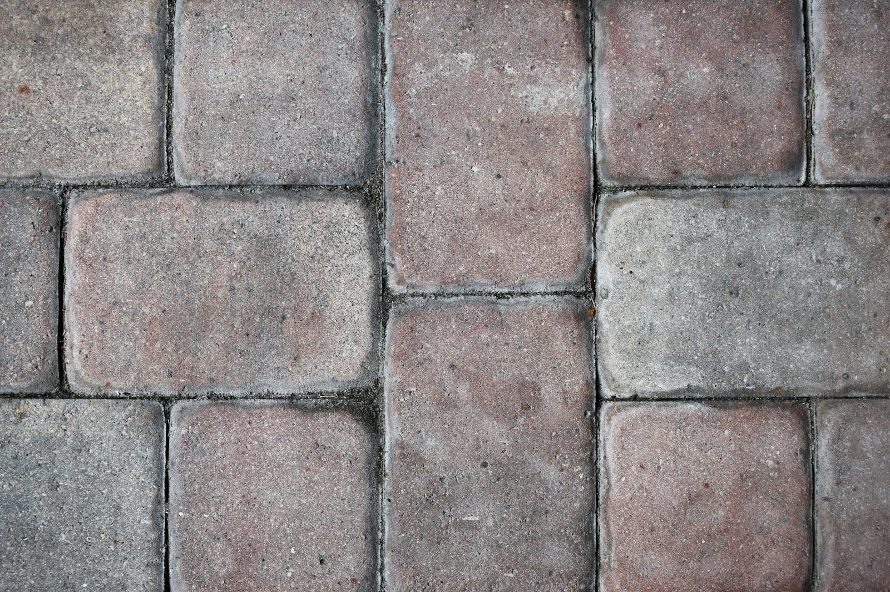

- Start
- Galerie
Impressionen
Galerie
Reinigung, Fugen, Sanierung, Räumung und Garten – filtern Sie nach Leistung und öffnen Sie jedes Bild in der Großansicht. Alle Fotos sind Symbolbilder zur Veranschaulichung.
Bildnachweis
Fotos & Lizenz
Alle Fotos stammen von Unsplash und stehen unter der Unsplash-Lizenz (kostenlos nutzbar, auch kommerziell). Es handelt sich um Symbolbilder – die abgebildeten Personen und Objekte stehen nicht in Verbindung mit GNZ Immobilien-Komplettservice.
- Vollgestellte Garage – Foto: Adam Winger auf Unsplash
- Reinigung mit Heißwasser-Dampf auf Pflaster – Foto: Adrian Raudaschl auf Unsplash
- Formschnitt im Garten – Foto: Anthony auf Unsplash
- Werkzeug für Kleinreparaturen – Foto: Bermix Studio auf Unsplash
- Haus mit Gerüst – Foto: Brett Jordan auf Unsplash
- Rasen wird gemäht – Foto: Carl Tronders auf Unsplash
- Gepflasterter Gartenweg – Foto: Emilie auf Unsplash
- Kopfsteinpflaster mit Moos in den Fugen – Foto: Fang Guo auf Unsplash
- Heckenschnitt mit Heckenschere – Foto: FRAEM GmbH auf Unsplash
- Bagger bei Rückbauarbeiten – Foto: Francisco Andreotti auf Unsplash
- Container mit Bauschutt – Foto: Haberdoedas II auf Unsplash
- Pflaster mit Unkraut in den Fugen – Foto: Jack B auf Unsplash
- Renovierungsarbeiten im Flur – Foto: Jessica Hearn auf Unsplash
- Außenbereich wird gekehrt – Foto: Khang Nguyen auf Unsplash
- Rasenmäher auf gepflegtem Rasen – Foto: Marc Pell auf Unsplash
- Kartons am Transporter – Foto: Markus Spiske auf Unsplash
- Pflasterfläche mit hellen Fugen – Foto: Markus Winkler auf Unsplash
- Transporter vor Gebäude – Foto: Maxim Tolchinskiy auf Unsplash
- Rasentrimmer an der Beetkante – Foto: Michael Kahn auf Unsplash
- Graues Betonpflaster – Foto: Mike Tinnion auf Unsplash
- Geöffnete Wand bei der Sanierung – Foto: Milivoj Kuhar auf Unsplash
- Formschnitt mit der Heckenschere – Foto: Peter Beukema auf Unsplash
- Betonpflaster im Verband – Foto: Shelter auf Unsplash
- Raum in der Sanierung – Foto: Stefan Lehner auf Unsplash
- Hochdruckstrahl, Nahaufnahme – Foto: Thatselby auf Unsplash
- Flächenreiniger im Einsatz – Foto: The Graphic Space auf Unsplash
- Flächenreiniger auf nassem Belag – Foto: The Graphic Space auf Unsplash
- Flächenreiniger, Nahaufnahme – Foto: The Graphic Space auf Unsplash
- Einfahrt wird mit Hochdruck gereinigt – Foto: The ProClean Team auf Unsplash
- Rückbau eines Gebäudes – Foto: Vincenzo Cassano auf Unsplash
- Graues Kopfsteinpflaster – Foto: William Ducret auf Unsplash